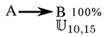
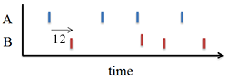
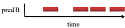
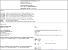
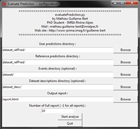
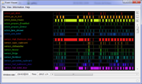

This page presents several Symbolic Time Sequences data-sets that can be used with the TITARL algorithm. The format of the data-set is given here. You can use the Event Viewer software to get an interactive pre-view of the data.
- The computer generated Database- The Home Data Set
- Forex Dataset: Automated Trading Experiment
1. The computer generated Database
Citation
If the data is used in a publication, please cite this web site:
Mathieu Guillame-Bert, http://mathieu.guillame-bert.com
Download

Presentation
This page presents our synthetic Symbolic Time Sequence data-set. This data-set can be used to test and evaluate Data-Mining algorithms for Symbolic Time Sequences. The data-set is divided into 100 parts (called experiments). Each parts contain unique temporal patterns with various complexity, noise level, correlation, etc. A description of the temporal patterns of each part is available in the data-set documentation. Each part is divided into three sub-parts of equal size. This sub-division can be used to perform cross validation and/or training/validating/testing.
Additionally, the data-set contains (for every part) a list of reference predictions. These predictions are (with some error margin) the best predictions that can be expected to do. Predictions are not Symbolic Time Sequences because they need to express temporal accuracy i.e. time ranges instead of time points. For example, suppose a data-set containing two types of events (A and B). Suppose the only temporal pattern is that every time there is an event A at time t, there is an event B between t+10 and t+15 (uniform distribution).
The figure 1 represents graphically this pattern. The figure 2 is an example of such dataset. The figure 3 represents the predictions of events B according to this pattern.

fig1 : simple temporal pattern

fig2 : example of time serie

fig3 : example of prediction
In this case, there is no meaning to predict B events with a time range under 5 time units. Any predictions with time range under 5 time units will have lower confidence and lower support than the kind of predictions represented on figure 3. In addition, the confidence and the support of such prediction will be linearly proportional to the 5 time units reference prediction.
A Python script is provided to automatically compare user predictions with references predictions. The comparison's result is presented in a HTML report. The figure 4 presents an example of such report. The report contains confidence, support and temporal precision of the user and reference predictions. This report also contains various analysis of the predictions such as relations between predictions confidence and several measure of the dataset complexity e.g. number of condition of the generative pattern, noise, density of events, etc..

fig4 : example of html report
(clic to enlarge)
Dataset organization
The data set is organized in the following way:
- The "dataSetInformation.html" file presents the patterns of each part of the dataset. The content of this file is explained in the Dataset information section (see online version here).
- The "dataset" directory contains part subpart of the dataset. Names of the files are "part_[X]_[Y].event". All files with the same X contains the same temporal patterns.
- The "dataset_refPred" directory contains the references predictions of each part of the dataset. Names of the files are "part_[X]_[Y].pred". "part_[X]_[Y].pred" predictions correspond to "part_[X]_[Y].event" events.
- The "dataset_desc" directory contains descriptions of the complexity of each part of the dataset. Names of the files are "part_[X]_[Y].txt". "part_[X]_[Y].txt" descriptions correspond to "part_[X]_[Y].event" events.
- The "evaluatePrediction.py" script compares user predictions
to reference predictions and generate a Html report. The script asks the
user to select
a directory containing its own predictions. This directory should have the
same organization as the "dataset_refPred" directory. Of course,
if the references prediction directory is selected as the user prediction
directory, the report displays prefect results. The figure
5 shows a screen
capture of script running. The more important measures given in the report
are :
- Ratio (or Gain) User's predictions' estimated confidence/Reference's predictions' estimated confidence
- Ratio (or Gain) User's predictions' estimated support/Reference's predictions' estimated support
- Ratio (or Gain) User's predictions' precision/Reference's predictions' precision
- The "readMe.html" file contains this page.
In order to obtain significant results, you should train and evaluate your learning algorithm on different subset of the data set. For example, you can train on "part_[X]_01.event" files and evaluate on "part_[X]_02.event" files.

fig5 : screen capture of the script
(click to enlarge)
File format
Events files (*.event) contain line by line events. Lines follow the following schema:
[time] event.[symbol]
The regular expression is :
[+-]?([0-9]*\.[0-9]+|[0-9]+)\s+\S+
Example:
3867.4 a
3874.8 b
3874.8 b
3901.4 a
3901.4 a
3908.9 b
3908.9 b
Prediction files (*.pred) contain line by line events. Lines follow the following schema:
[begin time] [end time] event.[symbol] [probability]
The regular expression is :
[-]?([0-9]*\.[0-9]+|[0-9]+)\s+[-]?([0-9]*\.[0-9]+|[0-9]+)\s+event\.\S+\s+?([0-9]*\.[0-9]+|[0-9]+)
Example:
13 15 b 0.7
25 28 b 1.0
61 67 b 0.8
62 66 b 0.8
Dataset descriptions files (*.txt) contain lists of complexity measures. Lines follow the following schema:
"[name of the measure]" [value of the measure]
Example:
" Maximum future of prediction" 10.000000
" Temporal precision" 3.000000
" Maximum condition window distance" 20.000000
" Maximum condition window size" 10.000000
" Maximum noise ratio" 0.000000
" Number of conditions" 3
" Probability of type 0 noise" 0.500000
" Probability of type 1 noise" 0.000000
" Probability of type 2 noise" 0.500000
" Duration of experiment" 100000
" Number of events to perdict" 918
Dataset information
For each part of dataset is given several pieces of information:
| Name : | The name of the part of dataset. |
| Number of events to predict : | Number of events of type "a" |
| Time range of dataset : | All the events will be temporally located between these boundaries. |
| Density of events to predict : | The ratio "Number of events to predict"/"Time range of dataset". |
| Number of different symbols : | The different symbols in the dataset. |
| Maximum future of prediction : | How far a prediction can be made. |
| Temporal precision : | The time accuracy of the reference predictions. |
| Maximum condition window distance : | Measure of far a pattern looks in the past to predict the future. |
| Maximum condition window size : | Measure of far a pattern looks in the past to predict the future |
| Number of conditions : | Number of conditions in the reference pattern. |
| Maximum ratio "number of noise events"/"number of events to predict" : | *straight forward* |
| Symbols noises ratio : | .Number of occurrence of this event / Number of occurrence of the symbol to predict |
| Probability of type {0,1,2} noise : | Probabilities of the different types of noises. |
| Type 1 and 2 noise probability parameter : | Parameters. |
| Rule random signature : | Random signature for the random generation of events. |
| Total number of events : | *straight forward* |
| Symbols (+number of occurrence) : | The number of occurrence of each events. |
| Patterns : | A graphical representation of the reference pattern. See the example of patterns section for more details. |
Example of patterns :
Here is several example of temporal patterns:
If an event P appends at time t, therefore an event A will appends between t+0.8 and t+2.9 with 62.28% chance.
If an event I appends at time t, and an event P appended between t-15.5 and t-8.3, therefore an event A will appends between t+2.8 and t+4.5 with 62.92% chance.
If an event F appends at time t, and an event K appended at time t' with t' ∈ [ t-7.9,t-2], and an event N appended at time t'' with t'' ∈[t'-14.1,t'-5.6], therefore an event A will appends between t+1.8 and t+4.6 with 63.26% chance.
If an event K appends at time t, and there is no events D appended between t-13.6 and t-4.9, therefore an event A will appends between t+4.9 and t+7.9 with 62.27% chance.
If an event I appends at time t, and an event J appended at time t' with t' ∈ [ t-7.3,t], and there is no events E appended at time t'' with t'' ∈[t'-10.9,t'-5.4], therefore an event A will appends between t and t+1.8 with 65.15% chance.
If an event F appends at time t, and an event K appended at time t' with t' ∈ [ t-13.1,t-3.2], and an event N appended at time t'' with t'' ∈[t-7.5,t'-1.7], therefore an event A will appends between t+7.3 and t+9.4 with 64.29% chance.
2. The Home Data Set
This dataset is based on the "Home activities dataset" by Tim van Kasteren, Athanasios Noulas, Gwenn Englebienne and Ben Krose presented in "Accurate Activity Recognition in a Home Setting".
It contains the record of 28 days of sensors data and activity annotations about one person performing activities at home. A flat is equipped with sensors on doors, cupboard, fridge, freezer, etc. Activities of the person are annotated (prepare breakfast, dinner, having a drink, toileting, sleeping, leaving the house, etc.). The dataset is divided into two categories: Sensors states (sensor_fridge, sensor_frontdoor, etc.) and activities states (action_get_drink, action_get_drink, action_prepare_dinner, etc.). In addition, twenty four states are describing the time of the day (it_is_1am, it_is_2am, it_is_3am, etc.). The dataset contains 42 types of states and 2904 occurrences of state changes. The dataset also contains the .xml layout file to be visualised with the Event Viewer software.

fig6 : Small extract of the dataset
(clic to enlarge)
Download:
3. Forex Dataset: Automated Trading Experiment
This dataset is a record of three years of the EURUSD exchange rate sampled approximately every minute (from June 5 2008 to June 5 2011). The dataset contains various indicators (computed from the exchange rate), and discredized events/states on these indicators.
A python script "evaluate_predictions.py" is provided with the dataset. This script takes as input a set of buying/selling order (see below for the file format of order), it evaluates the profits (or lost) of these orders, and it generates an html report. The report contains data such as:
- The sum of the profits
- The average value of the profits
- The standard deviation the profits
- Curves mapping the confidence of the order (a "confidence" can be specified for each order) for various metrics
- Etc.
The dataset also contains a short introduction to Forex trading for Automated trading systems. The introduction can also be read here: Read the introduction.
Download: